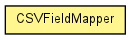

toxi.data.csv
Class CSVFieldMapper
java.lang.Object
 toxi.data.csv.CSVFieldMapper
toxi.data.csv.CSVFieldMapper
public class CSVFieldMapper
- extends java.lang.Object

This class allows the user to refer to CSV fields/columns via freely chosen
IDs. This is useful in cases where the actual CSV column name is very long or
the order of fields can be varying (e.g. when consuming CSV data from
different sources). The class constructor expects a HashMap to
establish the mapping between the custom keys and the actual CSV field names.
The following example demonstrates this usage:
HashMap<String,String> keys=new HashMap<String,String>();
// creates a new alias "name" for the actual CSV field name: "What is your name?"
keys.put("name","What is your name?");
keys.put("phone","What is your phone number?");
keys.put("tue","Times available on Tuesday");
keys.put("id","Actual CSV field name");
CSVFieldMapper mapper=new CSVFieldMapper(keys);
...
This mapper instance is then passed to a CSVParser and used to help
parsing & validating the data. When a row has been successfully parsed,
the CSVParser emits an event to allow clients to further process this
data, e.g. by bundling it into custom data types:
public void csvNewItemParsed(String[] fields, CSVFieldMapper map) {
Person p = new Person();
// use the mapper to get the field for the custom field ID "name"
p.setName(map.get("name",fields));
p.setPhone(map.get("phone",fields));
...
}
|
Constructor Summary |
CSVFieldMapper(java.util.HashMap<java.lang.String,java.lang.String> cols)
|
|
Method Summary |
java.lang.String |
get(java.lang.String id,
java.lang.String[] fields)
Looks up the value for CSV column mapped to the given ID. |
int |
getMappedFieldCount()
|
boolean |
setColumnOrder(java.lang.String[] columnTitles)
|
| Methods inherited from class java.lang.Object |
equals, getClass, hashCode, notify, notifyAll, toString, wait, wait, wait |
CSVFieldMapper
public CSVFieldMapper(java.util.HashMap<java.lang.String,java.lang.String> cols)
get
public java.lang.String get(java.lang.String id,
java.lang.String[] fields)
- Looks up the value for CSV column mapped to the given ID.
- Parameters:
id - fields -
- Returns:
- value or null, if not matched.
getMappedFieldCount
public int getMappedFieldCount()
setColumnOrder
public boolean setColumnOrder(java.lang.String[] columnTitles)